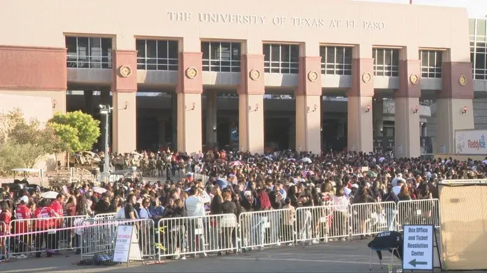

Preparing for a Concert
Some might think preparing for a concert might not be necessary and honestly to each their own, but to me I have to plan out the entire day just for the one concert. But before the day of the concert many plan out their outfits, what time to get there, and what they will bring with them. What I have learned throughout the years of concert going is that every artist has their own concept and that also connects to how their audience would like to dress for when they get to go to see them live. Planning the outfit has always been the first thing people do right after purchasing those concert tickets and especially when going with someone else like if you want to match with them or if you do two completely different outfits but still fit the vibe. Now if you buy tickets last minute then the outfit planning still comes right after the purchase but makes it even more difficult trying to figure out what to wear since you have to work with things you already have.
One thing I learned the hard way on preparing for concerts is figuring out the parking situation, especially in Atlanta. Parking has always been a hassle in downtown Atlanta, but doing your research and knowing where you will be parking makes the concert preparation a little easier. Unless you do rideshare, figuring out the parking and planning out what time to head out to get there on time is always a must for me when going to concerts no matter what. Sometimes you want to figure out what options are cheaper, closer to the venue, and the safest option as well.
Another must for concert preparation is what to bring with you, although for some they might not want to bring anything other than themselves and their phone which is reasonable it is not like this for others. I always end up using a clear bag since many venues are clear bags only and put all my things in there. I am a person that tends to want to be prepared for anything so my bag contains a lot of things such as my phone (of course), power bank, wallet(cards & ID), deodorant, car keys, hand sanitizer, and sunscreen for the summer or if you will be outdoors for a long period of time. Everyone is different but those are just some essential things I personally take with me to concerts all the time.
Concert Essentials
- Phone
- Wallet
- Portable Charger
- Hand Sanitizer
- Deodorant
- Sunscreen